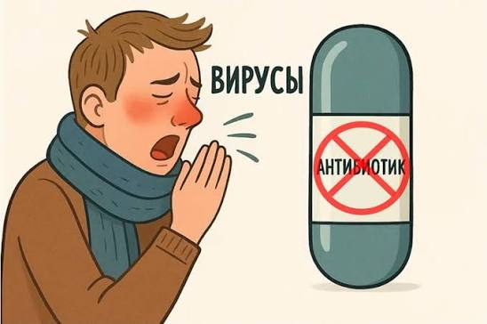

«Для разгрома фашизма и освобождения Франции он сделал больше целых дивизий», — писали про него парижские газеты в 1945 году. «Он» — британский микробиолог Александр Флеминг, который однажды посеял слизь из собственного носа в одну из чашек Петри с бактериями. Через несколько дней он обнаружил, что в местах, куда попала слизь, бактерии были уничтожены. Позже ученый выяснил почему: слизь содержала вещество, которое он назвал лизоцимом — естественным антисептиком.
Но это была лишь предтеча к главному открытию всей жизни Флеминга и одному из главных в истории человечества. Идея о том, что убивать бактерии способны природные вещества, не давала ему покоя. Так же как и нелюбовь к порядку.
В 1928 году в одной из своих чашек Петри с бактериями стафилококка он обнаружил плесень. Другой бы с отвращением выбросил находку, но только не Флеминг. Рассмотрев ее, он заметил, что колонии бактерий вокруг плесени стали прозрачными и погибли. Так микробиолог выделил пенициллин из плесневого гриба пеницилла и спас миллионы жизней в годы Второй мировой войны, не говоря уже про будущие поколения.
